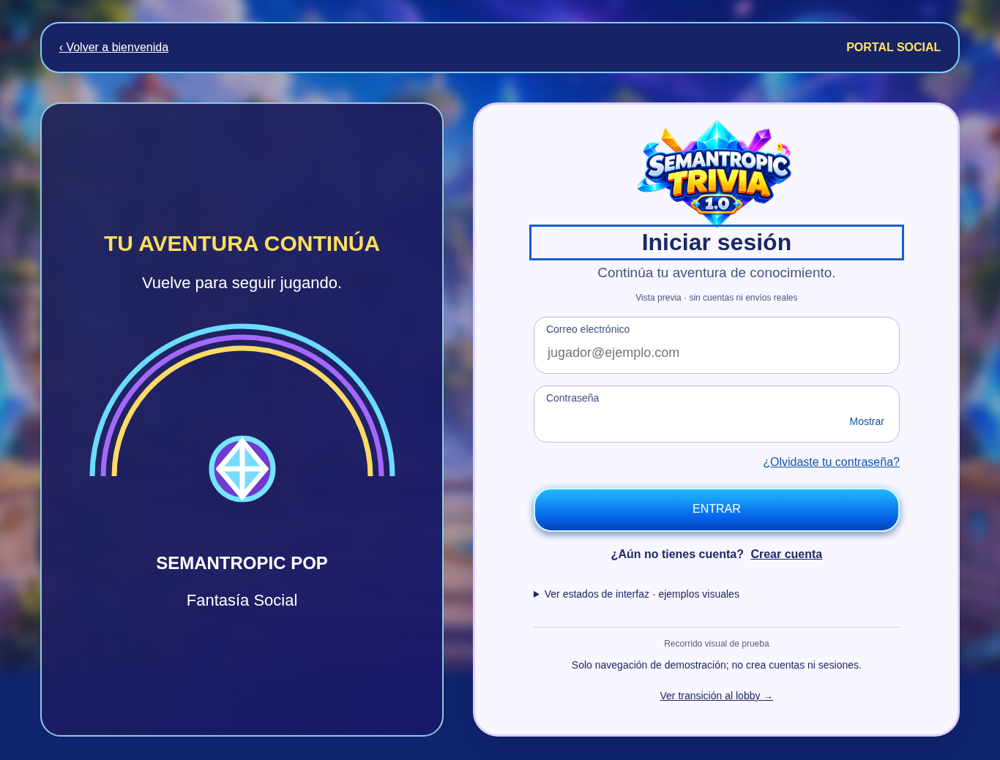
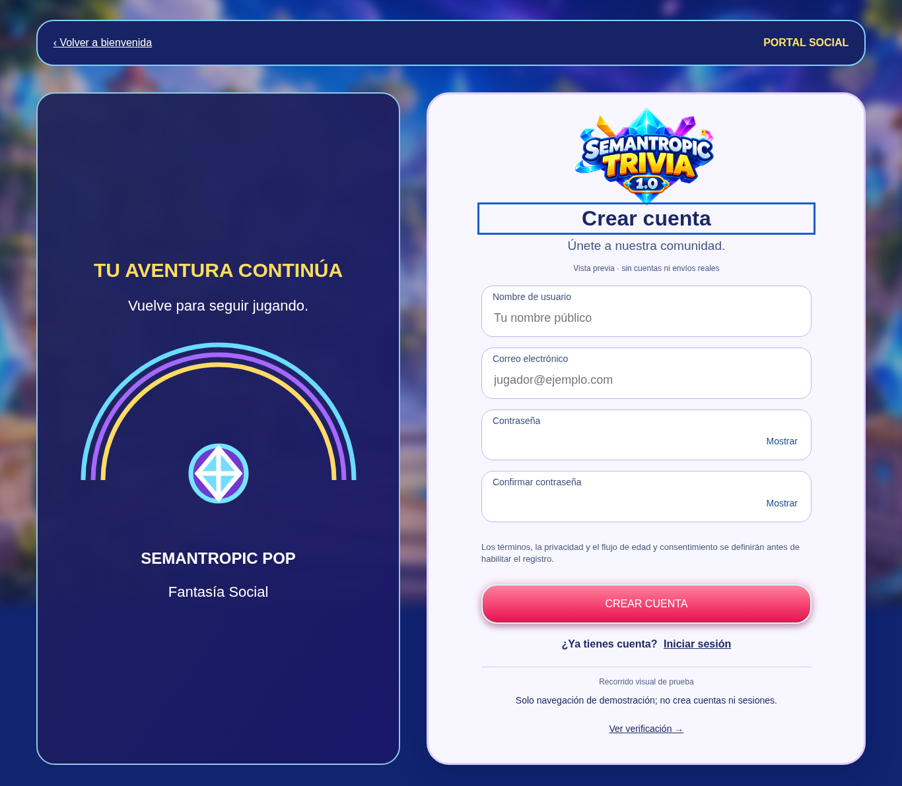
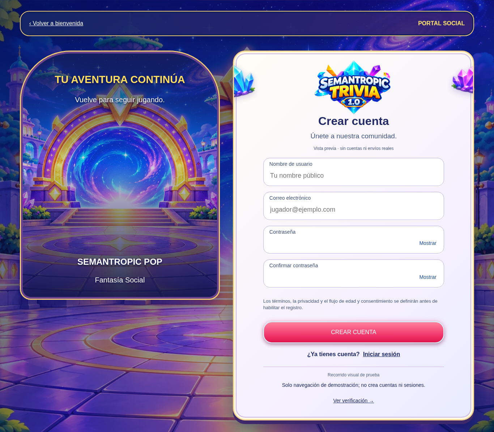
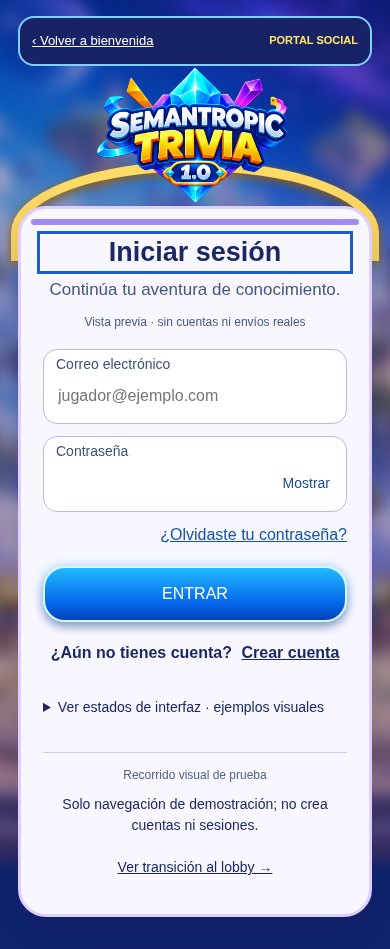
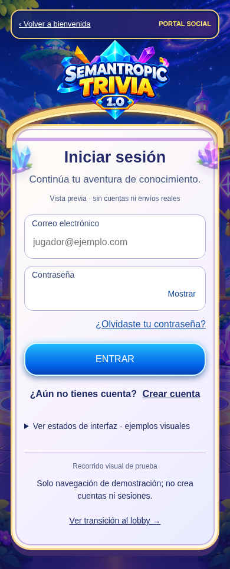
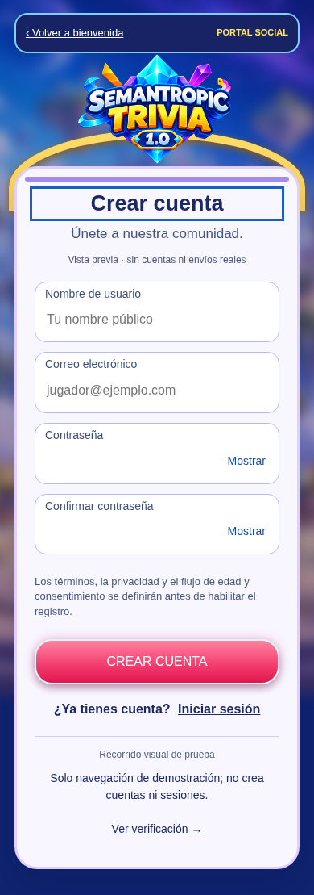
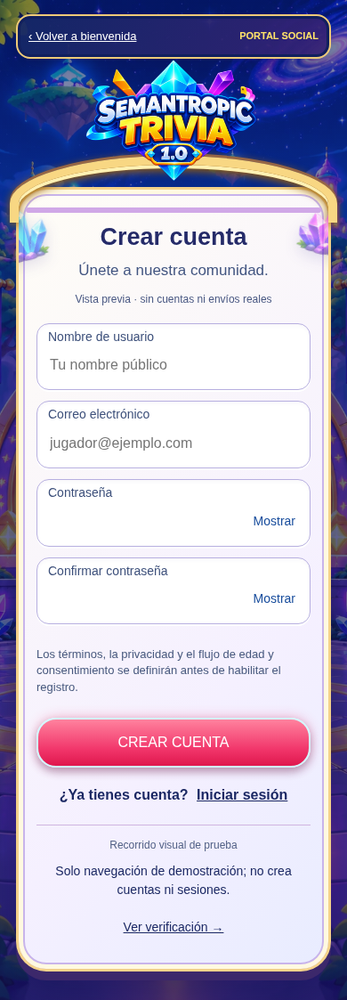

B04 · Refinamiento visual para revisión
CP01 recuperado de Git. Comparación en Chromium: escritorio 1366×900 y móvil emulado 390×844. Sin autenticación real. D-049 protegida.
desktop · sign-in
Antes · CP01 abffb9c
Después · refinamiento 06/11 desktop · register
Antes · CP01 abffb9c
Después · refinamiento 06/11
desktop · lobby-transition
Antes · CP01 abffb9cDespués · refinamiento 06/11
desktop · home
Antes · CP01 abffb9cDespués · refinamiento 06/11
mobile · sign-in
Antes · CP01 abffb9c
Después · refinamiento 06/11
mobile · register
Antes · CP01 abffb9c
Después · refinamiento 06/11
mobile · lobby-transition
Antes · CP01 abffb9cDespués · refinamiento 06/11
mobile · home
Antes · CP01 abffb9cDespués · refinamiento 06/11